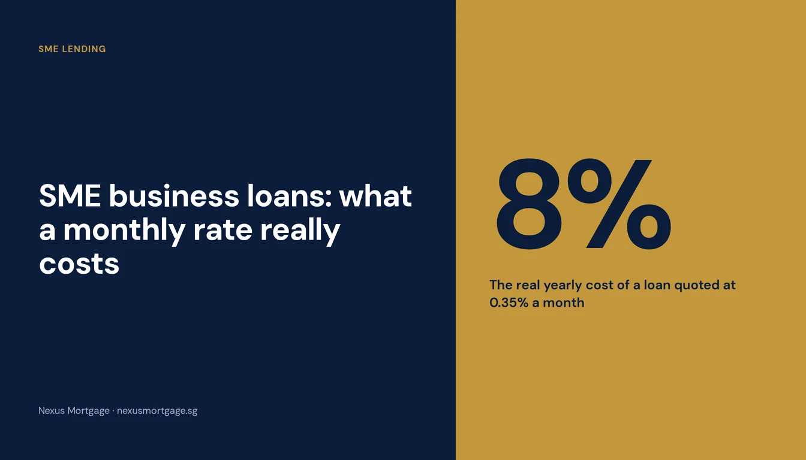
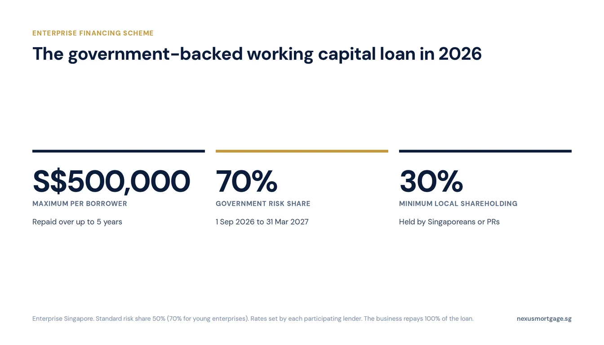
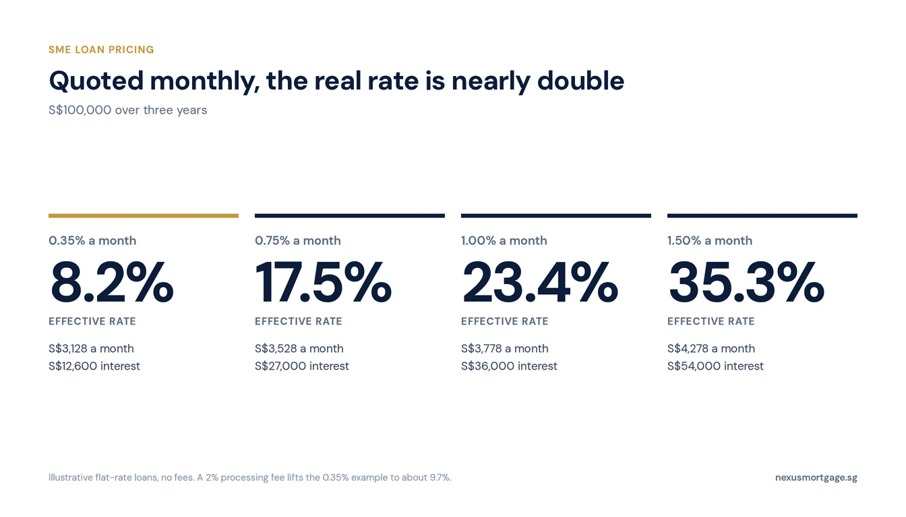

SME Business Loans in Singapore: Rates, the EFS Scheme, and How Much You Can Borrow

Most Singapore SMEs borrow in one of three ways: a government-backed working capital loan under Enterprise Singapore's Enterprise Financing Scheme (up to S$500,000 over up to five years), a lender's own unsecured business term loan, or a loan secured on property they own. Until 31 March 2027 the government carries 70% of the lender's risk on the EFS working capital loan, up from 50%, which makes approval easier. Watch the pricing: SME loans are usually quoted as a flat monthly rate, and 0.35% a month is about 8% a year in real terms. Ask every lender for the EIR.
Nexus is best known for home loans, but a large share of the owners we speak to are also running a business, and the two are tied together: the same person signs the guarantee on the company loan and the home loan. This guide covers how SME financing works in Singapore in 2026, what it really costs, and how to tell which option suits what you need the money for.
The Ways an SME Can Borrow
| EFS working capital loan | Unsecured business term loan | Loan secured on property | |
|---|---|---|---|
| Typical use | Working capital, stock, payroll, expansion | Working capital, short projects | Larger or longer needs |
| Size | Up to S$500,000 per borrower | Set by each lender | Driven by the property's value |
| Tenure | Up to 5 years | Usually a few years | Can run much longer |
| Security | None; government shares the lender's risk | None; usually a director's guarantee | The property |
| Pricing | Set by the lender | Set by the lender | Closest to home loan rates |
Two other tools sit alongside these. Trade and invoice financing funds specific purchases or receivables rather than the business in general. And a caveat loan is a short-term loan secured on property, quick to arrange but priced by the month, for bridging a gap rather than funding the business long term.
The EFS Working Capital Loan

The risk share helps lenders approve; it does not reduce what the business owes.
The Enterprise Financing Scheme is Enterprise Singapore's umbrella for government-supported business loans. The SME Working Capital Loan is the one most small businesses use. Enterprise Singapore does not lend directly: you borrow from a participating bank or finance company, and the government takes a share of the lender's risk if the loan goes bad. That risk share is what makes lenders more willing to approve a younger or smaller business.
| Maximum loan | S$500,000 per borrower; S$5 million per borrower group |
| Maximum repayment period | 5 years |
| Who qualifies | Registered and operating in Singapore, at least 30% local equity held by Singaporeans or PRs, group revenue up to S$100 million or up to 200 employees |
| Government risk share | 50% standard; 70% for young enterprises (formed within the past five years); 70% for all from 1 September 2026 to 31 March 2027 |
| Interest rate | Set by the lender, based on its assessment of the risk |
| Where to apply | Any participating financial institution |
The participating lenders include the major banks (DBS, OCBC, UOB, Maybank, HSBC, Standard Chartered, CIMB, RHB), GXS Bank, and finance companies such as Hong Leong Finance and Sing Investments & Finance. Because each sets its own rate and makes its own credit decision, the same business can get very different offers.
The risk share does not reduce what you owe. It is an arrangement between the government and the lender. Your company still repays the full loan, and if it cannot, the lender can pursue any guarantee the directors signed.
“The 70% risk share runs to 31 March 2027. If you were going to need working capital next year anyway, this is the window where lenders are most willing to say yes.”
What a Monthly Rate Really Costs

Compare offers on the EIR including fees, never on the monthly headline rate.
Business loans are usually advertised as a flat rate per month, for example “from 0.35% monthly”. A flat rate charges interest on the full original amount for the whole loan, even though you are repaying it every month. So the true cost, the effective interest rate (EIR), is close to double the flat rate. We explain the arithmetic in our flat rate vs EIR guide; for business loans it works out like this on S$100,000 over three years:
| Quoted rate | Per year, flat | Monthly instalment | Total interest | EIR (no fees) |
|---|---|---|---|---|
| 0.35% a month | 4.2% | S$3,128 | S$12,600 | about 8.2% |
| 0.75% a month | 9.0% | S$3,528 | S$27,000 | about 17.5% |
| 1.00% a month | 12.0% | S$3,778 | S$36,000 | about 23.4% |
| 1.50% a month | 18.0% | S$4,278 | S$54,000 | about 35.3% |
Fees add to that. A 2% processing fee deducted from the loan lifts the EIR on the 0.35% example from about 8.2% to about 9.7%, because you pay interest on money you never received. When you compare offers, compare the EIR including fees, not the headline monthly rate.
“From” matters too. The lowest advertised rate goes to the strongest applicants: established businesses with steady revenue, clean credit and, often, a longer banking relationship. A newer company should expect to be quoted above it.
What Lenders Look At
Every lender has its own criteria, but the same things decide almost every SME application:
- How long the business has been running, and its revenue trend. Many lenders want to see at least a year or two of operating history.
- Bank statements for the company's main account, usually the latest six months or more, to see real cash flow.
- Financial statements or management accounts, and the company's ACRA business profile.
- The directors' own finances: Notices of Assessment and personal credit reports, because the directors are usually asked to guarantee the loan.
- Existing borrowing by the company, including other business loans and credit lines.
The personal guarantee is the part to read carefully. It makes you personally liable for the company's debt. That matters for your own borrowing too: if you plan to buy or refinance a home soon, speak to us before you sign, because a bank assessing your mortgage will look at your total obligations.
When Borrowing Against Property Is Cheaper
If you own private property with spare equity, a loan secured on it is usually far cheaper than an unsecured business loan, and can run for much longer than five years. There are two very different ways to do it.
- Equity term loan or cash-out refinance. A bank lends against your property at rates close to home loan rates. It is the cheapest money most owners can raise, but it takes weeks, is subject to MAS loan-to-value limits and TDSR, and puts your home behind the debt. Our cash-out refinance guide explains the limits, and this guide covers borrowing against industrial property.
- Caveat loan. A private lender lodges a caveat on your property and lends within days. It is priced by the month and meant for a few months, typically to bridge a gap until a sale, a refinance or a receivable comes in. Next week's article compares the two in detail.
Comparing Lenders
Because each bank and finance company prices SME risk differently, the spread between the best and worst offer for the same business can be wide. For SME and business loans, Nexus works with our partner BizSaver, a loan comparison platform that says it works with more than 60 banks and loan providers in Singapore. You get the comparison; we stay your point of contact, and we can look at the business loan and your home loan together.
- Decide what the money is for and for how long. Working capital, a one-off project and a property purchase each suit a different product.
- Prepare six months of company bank statements, the latest financial statements and the directors' Notices of Assessment before you apply.
- Ask every lender for the EIR including fees, not the monthly rate.
- Check whether the offer is under EFS, and whether the 70% risk share applies.
- Read the personal guarantee and think about how it affects any home loan you plan to take.
Want a comparison for your business? WhatsApp us with what you need the money for, roughly how much, and how long the business has been running.
Frequently Asked Questions
Under the Enterprise Financing Scheme, up to S$500,000 per borrower (S$5 million per borrower group) over up to five years. Lenders also offer their own unsecured business loans outside the scheme, with their own limits.
A business registered and operating in Singapore with at least 30% local equity held by Singaporeans or PRs, and group revenue up to S$100 million or up to 200 employees. The lender still decides whether to approve.
50% as standard and 70% for young enterprises, raised to 70% for all from 1 September 2026 to 31 March 2027. The business still repays the full loan.
It is low for an unsecured business loan, but it is a flat monthly rate: about 4.2% a year flat, or roughly 8% a year as an effective rate, before fees. Always ask for the EIR.
Usually. Most lenders ask the directors or main shareholders to guarantee an unsecured business loan, which makes them personally liable if the company cannot repay.
Often. An equity term loan is priced close to home loan rates and runs longer, but it puts your home behind the debt and follows MAS loan limits. A caveat loan is faster but much more expensive, and meant for months, not years.
Further reading
- Flat rate vs EIR: why a monthly rate costs nearly double
- SME equity term loans on industrial property: borrowing against business premises
- Cash-out refinance: raising cash against a home you own
- Caveat loans: fast, short-term money secured on property
- Commercial property loans: financing the premises itself
This article is general information on SME financing in Singapore. It is not financial, legal or tax advice, and not an offer of credit. Nexus Mortgage does not lend business loans; BizSaver is a Nexus partner and Nexus may benefit from that relationship. Lenders set their own rates and decide every application. EFS terms are set by Enterprise Singapore and may change; confirm them with the lender or Enterprise Singapore. The rate table is illustrative: S$100,000 over 36 months at the flat monthly rates shown, with no fees unless stated. Current as at October 2026. Source: Enterprise Singapore: Enterprise Financing Scheme, SME Working Capital.

About the author — Dan Ler has advised on Singapore home loans since 2017 at Nexus Mortgage SG, an independent brokerage comparing 16+ MAS-regulated lenders. Nexus has facilitated 500+ home loans across HDB, EC, private condo and landed property segments. Banks pay Nexus on disbursement, so there is no cost to the borrower.